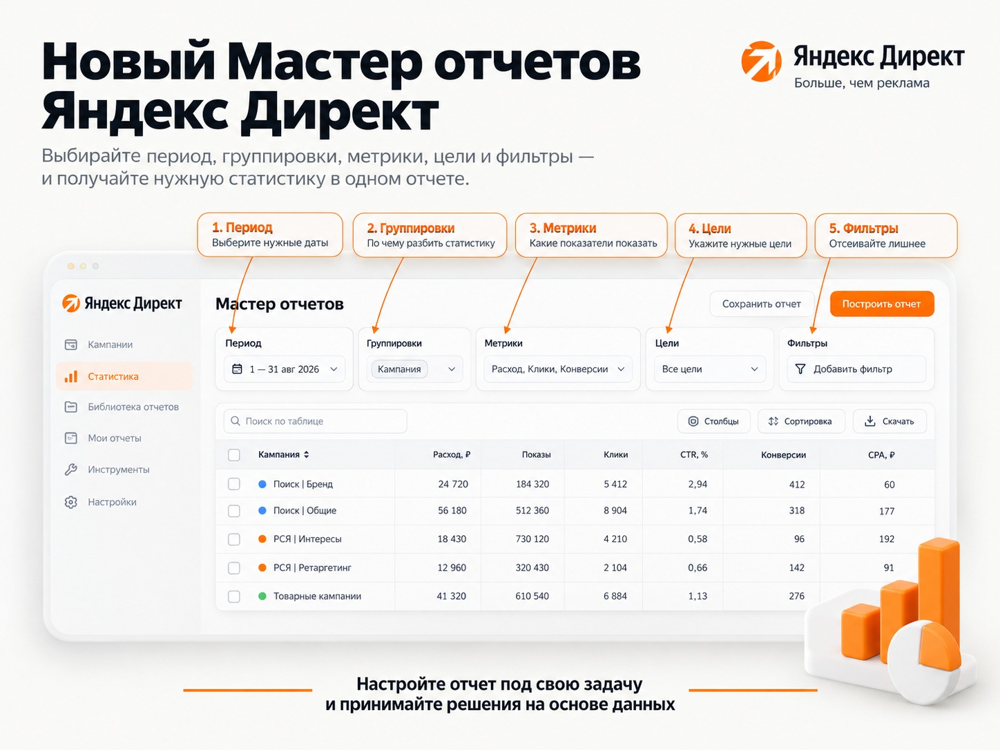
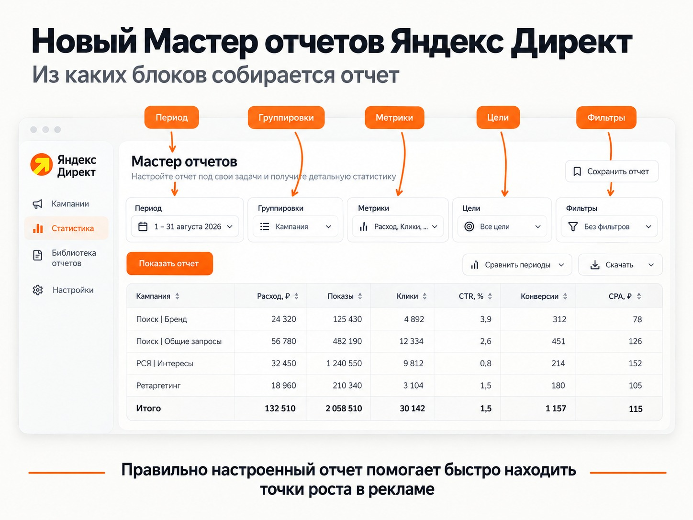
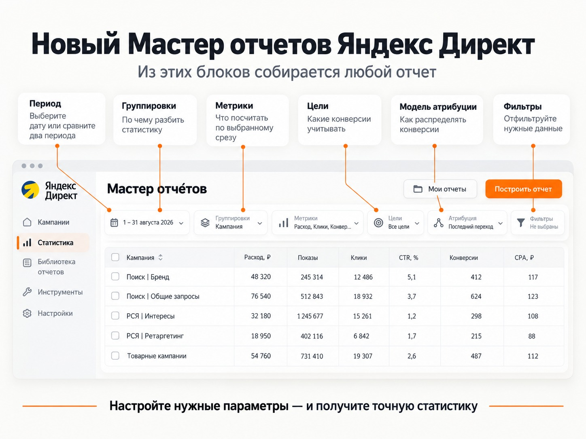

Блог о платном трафике
Мастер отчётов Яндекс Директ: как настроить и анализировать статистику в 2026 году
Мастер отчётов Яндекс Директа позволяет посмотреть расходы, показы, клики, конверсии и CPA, а затем разобраться, какие кампании, поисковые запросы, объявления и площадки приносят результат. Чтобы построить отчёт, нужно выбрать период, группировки, метрики, цели и при необходимости добавить фильтры.
В 2026 году интерфейс заметно обновился. Новый Мастер отчётов вышел из беты в марте, а с 22 июня стал основным инструментом аналитики в Директе. Помимо просмотра статистики, теперь из отчётов можно добавлять минус-фразы, управлять площадками РСЯ, сравнивать периоды и сохранять собственные настройки.
Я работаю со статистикой Директа постоянно. Ниже разберу не только возможности интерфейса, но и конкретные задачи, для которых использую отчёты в рекламных кампаниях.
Где посмотреть статистику Яндекс Директа
Откройте рекламный кабинет и выберите в левом меню «Статистика», затем «Мастер отчётов».
Другой способ - перейти к статистике непосредственно из списка рекламных кампаний. В таком случае Директ откроет подходящий отчёт из Библиотеки с фильтром по выбранной кампании.
Если нужно просто посмотреть расходы и число конверсий, часто достаточно основной таблицы кампаний. Мастер отчётов полезен, когда нужно выяснить причины результата: какие запросы расходуют бюджет, какие объявления приводят заявки, почему вырос CPA и какие площадки РСЯ работают хуже остальных.
Как устроен новый Мастер отчётов

Новый Мастер отчётов строится вокруг шести основных настроек:
- Период - за какой промежуток времени смотреть статистику.
- Группировки - по каким признакам разделить данные.
- Метрики - какие показатели рассчитать.
- Цели - какие действия пользователей учитывать как конверсии.
- Модель атрибуции - как определять вклад рекламы в конверсии.
- Фильтры - какие данные оставить или исключить.
Главное различие между группировкой и метрикой простое. Группировка отвечает на вопрос «По чему разбить статистику?», а метрика - «Что по этому срезу посчитать?».
Например, если выбрать группировку «Название кампании» и добавить метрики «Расход», «Клики», «Конверсии» и «CPA», получится таблица эффективности рекламных кампаний.
Если вместо кампаний выбрать поисковые запросы, те же показатели будут рассчитаны для отдельных запросов.
В новом интерфейсе группировки и метрики распределены по логическим разделам. Работает поиск по названиям и синонимам, а отчёт автоматически обновляется после изменения настроек.
Столбцы можно переставлять, закреплять, сортировать и фильтровать прямо в таблице.
Для бизнеса я обычно рекомендую начинать с расхода, количества конверсий и CPA. CTR и цена клика тоже полезны, но сами по себе не показывают, насколько эффективно расходуется рекламный бюджет.
Подробнее о показателях можно прочитать в статье «Конверсия в Яндекс Директ: что это и как её считать».
Как настроить отчёт в Яндекс Директе пошагово
Чтобы самостоятельно создать отчёт, необязательно начинать со сложных настроек. Для первоначального анализа достаточно шести действий.
- Откройте «Статистика», затем «Мастер отчётов».
- Установите период анализа, например последние 30 дней.
- Добавьте группировку «Название кампании».
- Выберите метрики «Расход», «Показы», «Клики», «Конверсии», «CR» и «CPA».
- Укажите цель, по которой хотите оценивать эффективность. Например, отправку заявки или подтверждённый заказ.
- Проверьте модель атрибуции и при необходимости добавьте фильтры.
Получится базовый отчёт, показывающий эффективность отдельных кампаний.
Для более подробного анализа можно добавлять другие группировки: группы объявлений, условия показа, регионы, устройства, площадки и поисковые запросы.
Не добавляйте сразу десятки группировок. Чем больше параметров участвует в детализации, тем сложнее читать итоговую таблицу.
Обычно удобнее сначала обнаружить проблему на уровне кампаний, а затем постепенно переходить к более подробным срезам.
Какие группировки и метрики выбрать для разных задач
Нет одного универсального отчёта, который одинаково хорошо отвечает на все вопросы о рекламе.
Настройки Мастера отчётов стоит подбирать под конкретную аналитическую задачу.
| Задача | Группировки | Метрики |
|---|---|---|
| Сравнить эффективность кампаний | Название кампании | Расход, клики, конверсии, CPA |
| Найти нецелевые поисковые запросы | Поисковый запрос, тип условия показа | Расход, клики, конверсии |
| Сравнить ключевые фразы и автотаргетинг | Тип условия показа, ключевая фраза | Расход, клики, конверсии, CPA |
| Найти неэффективные площадки РСЯ | Название площадки, название кампании | Расход, клики, конверсии, CPA |
| Проверить эффективность объявлений | Название кампании, № объявления | Показы, клики, CTR, конверсии, CPA |
| Сравнить результат по регионам | Регион, название кампании | Расход, конверсии, CPA |
| Оценить товары интернет-магазина | Название товара или каталога, категория товара | Расход, конверсии, доход, ДРР |
Это стартовые настройки. В зависимости от задачи можно добавлять дополнительные показатели и фильтры.
Например, для анализа РСЯ недостаточно просто посмотреть количество кликов с площадки. Нужно учитывать расходы, конверсии и качество полученных заявок.
А для интернет-магазина количество заказов желательно анализировать вместе с выручкой и ДРР.
Мой подход: сначала формулирую вопрос, на который хочу получить ответ. Только после этого выбираю группировки и метрики. Такой порядок позволяет не тратить время на изучение большого количества ненужных показателей.
Библиотека отчётов Яндекс Директа
Библиотека отчётов - это набор готовых настроек для распространённых аналитических задач. В каждом отчёте уже выбраны подходящие группировки, метрики и фильтры.
Найти её можно в разделе «Статистика».
В Библиотеке есть отчёты для анализа поисковых запросов, площадок РСЯ, типов кампаний, устройств, аудитории, товаров, регионов и других параметров.
Для регулярной работы особенно полезны:
- «Поисковые запросы» - анализ реальных запросов пользователей.
- «Площадки» - статистика размещений в РСЯ.
- Отчёты по типам кампаний - оценка результатов отдельных рекламных форматов.
- Отчёты по товарам и категориям - анализ товарного ассортимента.
- Отчёт по недействительному трафику - изучение данных, отфильтрованных антифрод-системой Яндекса.
Готовый отчёт можно изменить под свои задачи и сохранить в разделе «Мои отчёты».
Это удобно, если вы регулярно проверяете одни и те же показатели. Не потребуется каждый раз заново выбирать группировки, метрики и фильтры.
Как смотреть поисковые запросы в Мастере отчётов
Чтобы увидеть реальные запросы пользователей, в разделе «Статистика» откройте Библиотеку отчётов, затем «Оптимизация размещения» и «Поисковые запросы».
Отчёт показывает, по каким формулировкам пользователи видели рекламу и какие условия показа вызвали её появление.
Здесь особенно полезны группировки:
- Поисковый запрос.
- Тип условия показа.
- Ключевая фраза.
- Тип соответствия.
- Категория запроса.
- Упоминание брендов в запросах.
Как быстро найти проблемные запросы
Если в кампании тысячи запросов, просматривать их подряд нет смысла.
Я рекомендую следующий порядок:
- Сначала выбрать группировку «Тип условия показа» и сравнить расходы и результативность ключевых фраз и автотаргетинга.
- Затем добавить «Поисковый запрос» и посмотреть реальные формулировки пользователей.
- Отсортировать строки по расходам, чтобы увидеть, на что тратится больше всего бюджета.
- Проверить запросы с расходами и без конверсий, учитывая накопленный объём статистики.
- Отдельно изучить запросы с конверсиями и определить, можно ли расширить за счёт них семантику.
Не стоит автоматически считать любой запрос без конверсий неэффективным. Если он получил всего несколько кликов, данных может быть недостаточно.
Как сравнить ключевые фразы и автотаргетинг
Группировка «Тип условия показа» позволяет понять, откуда пришёл трафик: по заданным ключевым фразам или через автотаргетинг и другие условия показа.
Если видите, что автотаргетинг получает существенную долю бюджета, но приносит мало целевых действий, откройте подробные поисковые запросы.
Для автотаргетинга полезно также изучать категории запросов. Это помогает понять, какие категории спроса приводят нецелевую аудиторию.
Для ключевых фраз стоит проверить тип соответствия. Пословное соответствие и семантическое соответствие позволяют анализировать, насколько реальные запросы близки к исходным ключевым фразам.
Если семантическое соответствие регулярно приводит нерелевантные запросы, изучите формулировки и при необходимости уточните ключи операторами.
Подробнее об этом написано в статьях «Как отключить автотаргетинг в Яндекс Директе» и «Операторы Яндекс Директ».
Как добавить минус-фразы из отчёта
В новом Мастере отчётов ненужные поисковые запросы можно добавлять в минус-фразы непосредственно из статистики.
Для этого:
- Откройте отчёт «Поисковые запросы».
- Выберите нужные строки.
- Нажмите «Добавить в минус-фразы».
- Проверьте формулировки и при необходимости отредактируйте их.
- Выберите уровень применения: группа объявлений или кампания.
- Сохраните изменения.
В Мастере отчётов для массовых действий должна быть выбрана группировка по кампании или группе объявлений.
Не стоит добавлять запросы в минус-фразы только потому, что по ним пока не было конверсий. Сначала нужно убедиться, что они действительно не соответствуют рекламируемому предложению.
Подробнее - «Минус-фразы для Яндекс Директа».
Как добавить эффективные запросы в ключевые фразы
Обратная возможность тоже доступна.
Если какой-то поисковый запрос регулярно приводит целевые обращения, его можно добавить в ключевые фразы прямо из отчёта.
Выберите запрос, нажмите «Добавить в ключевые фразы», проверьте текст и сохраните изменения.
При стратегии «Максимум кликов с ручными ставками» можно также указать ставку.
Мастер отчётов помогает находить проблемы и расширять работающую семантику.
Какие ограничения есть у отчёта по поисковым запросам
Подробные данные доступны за последние 180 дней.
При этом Яндекс может проверить корректность подбора по автотаргетингу и семантическому соответствию только за последние 60 дней.
Часть запросов объединяется в строке «Другие поисковые запросы». В неё, в частности, попадают запросы с небольшим количеством показов и без кликов.
Поэтому сумма показов по расшифрованным запросам может отличаться от общей статистики кампании.
При анализе важно проверять активные фильтры и учитывать эти ограничения, чтобы не делать неправильные выводы.
Как анализировать площадки РСЯ

Для проверки эффективности сайтов и приложений Рекламной сети Яндекса используйте готовый отчёт «Площадки».
Откройте его в Библиотеке отчётов, в разделе «Оптимизация размещения».
В стандартном отчёте уже есть основные показатели: название площадки, кампания, расходы, показы, клики, конверсии, CR и CPA.
Как найти площадки с большими расходами
Я обычно начинаю анализ с сортировки по расходам.
Это позволяет сразу увидеть, какие площадки получают наибольшую часть рекламного бюджета.
Дальше нужно проверить количество конверсий, CPA и качество полученных заявок.
Особенно важно не делать вывод по одной площадке на основании нескольких кликов.
Например, площадка могла потратить 500 рублей и не принести заявок, но сама по себе эта информация ещё не доказывает её неэффективность.
Решение зависит от допустимой стоимости конверсии, накопленного объёма данных и результатов других площадок.
Как фильтровать площадки по названию
Одна из удобных функций нового Мастера - текстовые фильтры.
В настройках можно использовать группировку «Название площадки» и условие «Содержит».
Например, искать площадки, в названии которых встречаются:
comdspgame
Это позволяет быстро выделять определённые группы площадок.
Однако само наличие такого фрагмента в названии ничего не говорит о качестве трафика.
Я не рекомендую запрещать площадки только из-за их названия. Сначала нужно изучить статистику и качество конверсий.
Как запретить площадку прямо из отчёта
Мастер отчётов позволяет запрещать и разрешать показы на площадках РСЯ без перехода в настройки каждой кампании.
Для этого:
- Откройте отчёт «Площадки».
- Убедитесь, что добавлены группировки «Название площадки» и «Название кампании» или «№ кампании».
- Включите режим массовых действий.
- Выделите нужные площадки.
- Выберите действие «Запретить» или «Разрешить».
- Подтвердите изменения.
При необходимости можно работать сразу с несколькими кампаниями.
Для больших списков площадок также полезна выгрузка отчёта в XLSX или CSV.
Как найти причину роста CPA в Яндекс Директе
Если стоимость конверсии увеличилась, не нужно сразу снижать ставки или отключать объявления.
Сначала определите, за счёт какого показателя вырос CPA.
CPA = рекламные расходы / количество конверсий.
Если для анализа подходит обычная стоимость клика и конверсия от кликов, показатель также можно представить как:
CPA = CPC / CR, где CR используется в долях единицы.
Это означает, что стоимость конверсии может увеличиться из-за роста CPC, снижения CR или одновременно по обеим причинам.
Допустим, за предыдущий период CPA составлял 1500 рублей, а сейчас вырос до 2200 рублей.
Порядок проверки:
- Сравните два периода. Добавьте расходы, клики, CPC, конверсии, CR и CPA. Проверьте, на каком показателе произошло основное изменение.
- Найдите проблемную кампанию. Используйте группировку «Название кампании» и определите, где рост стоимости конверсии наиболее заметен.
- Проверьте источники трафика. Для Поиска изучите запросы и условия показа, для РСЯ - площадки и объявления.
- Проверьте географию и устройства. Возможно, увеличилась доля трафика из менее результативных сегментов.
- Проверьте настройки целей и аналитики. Убедитесь, что конверсии продолжают передаваться корректно, выбран нужный счётчик и не изменилась модель атрибуции.
Если вырос CPC, необходимо разобраться в стоимости привлечения трафика. Если снизился CR, стоит проверить не только рекламу, но и работу сайта, предложения и обработки заявок.
Наконец, причиной роста CPA может оказаться маленькая выборка. При небольшом количестве конверсий даже один дополнительный заказ заметно изменяет показатель.
Главный вывод: Мастер отчётов помогает найти место возникновения проблемы, но для определения её причины иногда нужны дополнительные данные из Метрики, CRM и истории изменений рекламных кампаний.
Анализ объявлений и креативов
В 2026 году в Мастере отчётов появились дополнительные группировки для анализа изображений и видео.
Среди них:
- Изображение.
- Название изображения.
- ID видео.
- Превью видео.
Их можно сочетать с группировками по объявлениям, заголовкам и текстам.
Это позволяет изучать эффективность разных рекламных материалов не только по CTR, но и по конверсиям и CPA.
Однако при сравнении креативов нужно учитывать объём трафика, площадки размещения и другие условия показа.
Если одно объявление получило значительно больше трафика, чем другое, прямое сравнение без учёта этих различий может привести к неправильному выводу.
В товарных и каталожных объявлениях можно дополнительно анализировать названия товаров, производителей, категории, тексты и ссылки.
Древовидные таблицы
Древовидный вид позволяет анализировать несколько уровней рекламной статистики внутри одной таблицы.
Например, сначала посмотреть результат кампании, затем раскрыть группы объявлений и перейти к конкретным объявлениям.
Другой сценарий - анализ регионов внутри каждой кампании.
Порядок группировок определяет структуру дерева.
Особенно полезна эта возможность для крупных рекламных аккаунтов. Вместо нескольких отдельных отчётов можно последовательно изучать данные в одной таблице.
Сравнение периодов и графики
В Мастере отчётов можно сравнивать показатели за два периода и смотреть динамику на графиках.
Для сравнения доступны предыдущий равный период, предыдущая неделя, месяц, год и произвольные интервалы.
В новом интерфейсе сравниваемые периоды могут даже пересекаться.
Графики позволяют анализировать изменения расходов, кликов, CTR, конверсий и других показателей.
Я использую их прежде всего для поиска момента, когда изменились результаты рекламы.
Например, если CPA начал расти с определённой даты, можно проверить изменения трафика и настроек именно за этот промежуток.
Но график показывает динамику, а не причину изменений. Для анализа всё равно приходится переходить к подробным группировкам.
Цели и CPA: как правильно интерпретировать статистику

При анализе нескольких целей важно понимать, что именно рассчитывает Мастер отчётов.
Можно выбрать сразу несколько целей и настроить отображение конверсионных метрик:
- суммарно по выбранным целям;
- отдельно по каждой цели;
- одновременно в обоих вариантах.
Именно здесь иногда возникают ошибки в интерпретации результатов.
Пример с Telegram и МАКС
Для некоторых клиентов мы используем лендинг, на котором посетителю предлагают выбрать удобный мессенджер: Telegram или МАКС.
При такой схеме можно настроить отдельные цели для каждого направления и анализировать результат в Мастере отчётов.
В одном из моих примеров стоимость достижения целей отображалась примерно так:
- МАКС - 278 рублей;
- Telegram - 551 рубль.
На первый взгляд может показаться, что подписчик Telegram обходится значительно дороже.
Но рекламный бюджет до момента выбора мессенджера был общим.
Когда Мастер отчётов рассчитывает CPA отдельно для каждой цели, общие расходы соотносятся с количеством достижений соответствующей цели.
Это не означает, что весь рекламный бюджет был независимо потрачен на привлечение пользователей в каждый мессенджер.
Как рассчитать общий CPA
Если нужно оценить эффективность рекламной связки в целом, можно использовать формулу:
Общий CPA = расходы / сумма достижений двух целей.
В моём примере при таком расчёте получается около 185 рублей за целевое действие.
Это показатель стоимости одного достижения выбранных целей при общем рекламном бюджете.
Но есть важные ограничения.
Если один пользователь выполнил обе цели, сумма достижений не будет равна числу уникальных людей.
Кроме того, если цель фиксирует только переход по кнопке Telegram или МАКС, полученный CPA нельзя автоматически называть стоимостью фактического подписчика.
Для этого необходимо отдельно отслеживать реальные подписки.
Можно ли точно разделить стоимость привлечения в Telegram и МАКС
Если обе кнопки находятся на одном лендинге, а рекламные расходы до момента выбора общие, точно распределить бюджет между двумя направлениями по обычному отчёту нельзя.
Можно построить оценочную модель распределения расходов, но её результат будет зависеть от выбранной методики.
Поэтому я не рекомендую выдавать такие расчёты за фактическую стоимость двух независимых каналов привлечения.
Если нужна точная экономика каждого направления, потребуется организовать раздельный учёт расходов и результатов.
Главное правило при анализе CPA - проверять, какие расходы и какие именно конверсии используются в расчёте.
Почему данные Мастера отчётов могут отличаться от Метрики
Различия между данными Яндекс Директа и Яндекс Метрики не всегда означают ошибку.
Причинами могут быть:
- Разные модели атрибуции, которые по-разному определяют источник конверсии.
- Отличающиеся периоды и способы учёта событий.
- Разные выбранные цели.
- Задержка поступления и обработки конверсионных данных.
- Особенности учёта кликов и визитов.
Если цифры не совпадают, сначала проверьте, действительно ли сравниваете одинаковые показатели.
Особое внимание уделите модели атрибуции. Для контроля результатов конверсионной стратегии полезно использовать в отчёте ту же модель, что установлена в стратегии.
Также важно учитывать задержку конверсий при длительном цикле принятия решения.
Отсутствие заявки в статистике за сегодняшний день не всегда означает, что реклама не принесёт результат позднее.
Какие показатели смотреть владельцу бизнеса
Если нет задачи подробно разбирать каждую кампанию, достаточно нескольких основных показателей.
| Показатель | Что показывает |
|---|---|
| Расход | Сколько денег потрачено на рекламу |
| Клики | Сколько переходов получено |
| Конверсии | Сколько целевых действий зафиксировано |
| CR | Какая доля кликов или другого выбранного основания приводит к конверсии |
| CPA | Сколько стоит одно целевое действие |
| Доход | Какую выручку передали в систему аналитики |
| ДРР | Какую долю выручки составляют рекламные расходы |
Для оценки реальной эффективности бизнеса особенно важны не просто конверсии, а качественные обращения и продажи.
Например, одна кампания может приводить дешёвые заявки, которые не превращаются в клиентов. Другая - давать более дорогие обращения, но приносить большую выручку.
Сам Мастер отчётов не всегда показывает эту разницу. Если данные о продажах не передаются из CRM, полноценную экономику придётся анализировать отдельно.
Подробнее - «Аудит Яндекс Директ: что проверить и как найти проблемы в рекламе».
Что ещё появилось в новом Мастере отчётов
За 2025‑2026 годы Яндекс заметно расширил возможности аналитики.
Среди наиболее полезных изменений:
- Библиотека готовых отчётов.
- Сохранение собственных настроек в разделе «Мои отчёты».
- Возможность делиться отчётами по ссылке.
- Автоматическое обновление таблиц.
- Наследование фильтров при переходе между отчётами.
- Массовая работа с минус-фразами.
- Управление площадками РСЯ из статистики.
- Группировки по изображениям и видео.
- Древовидные таблицы.
- Графики и сравнение периодов.
- Отдельное отображение нескольких целей.
- Отчёт по недействительному трафику.
- Выгрузка данных в XLSX и CSV.
Также в Директе появился ИИ-помощник, который может построить отчёт по запросу на обычном языке.
Ему можно описать аналитическую задачу, после чего он подготовит подходящий срез статистики.
Это удобно, когда нужно быстро получить данные, не выбирая вручную все группировки и метрики. Но интерпретировать результат и принимать решения об изменениях рекламы всё равно необходимо с учётом бизнес-показателей.
Главное правило работы со статистикой Яндекс Директа
Мастер отчётов помогает увидеть не только результат рекламной кампании, но и то, из каких источников этот результат складывается.
Однако отдельные показатели без контекста легко интерпретировать неправильно.
Одна площадка может выглядеть дорогой из-за небольшой выборки. У поискового запроса может оказаться высокий CPA из-за единственной конверсии. А несколько выбранных целей могут создавать сложности при расчёте общей стоимости привлечения.
Поэтому я рекомендую следующую последовательность:
- Сначала посмотреть общие расходы, конверсии и CPA.
- Определить кампании и периоды с отклонениями.
- Изучить поисковые запросы, площадки, объявления или регионы.
- Использовать фильтры для уточнения данных.
- Проверить объём статистики и корректность целей.
- Только после этого изменять рекламную кампанию.
Новый Мастер отчётов стал удобнее не просто потому, что в нём больше функций. Главное преимущество - возможность быстрее переходить от общей статистики к конкретным причинам проблем и выполнять часть оптимизации непосредственно из отчёта.